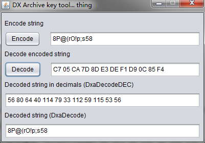

一、前言
Wolf RPG Editor 由于其需要翻来覆去的转码，脚本名称等问题算是解包跟汉化中比较麻烦的一种了。
通用打开工具
wolf 编辑器汉化版.rar: 点击下载，解压密码：crowsong.xyz
二、使用 arc_conv_r53 进行解包
arc_conv_r53 算是一个非常通用的工具了，可以解包很多种类的游戏（包括大部分 Wolf RPG Editor 封包的文件），但是由于很久没有更新导致一些新版的游戏已经不能解包了。
这里我们主要说的是如何解包 Wolf RPG Editor 封包的游戏。（该工具内有教程如何解包后缀名为 WAR 的文件）
所需工具：
arc_conv_r53.rar: 点击下载，解压密码：crowsong.xyz
步骤：
- 1、双击解包工具中的 arc_conv.exe 。
- 2、找到游戏所在文件夹，点击 Data.wolf，再单击“打开”。
- 3、出现一堆数字后，会在原游戏文件夹生成一个 Data.wolf~的文件夹，将之改名为“Data”即可。然后删掉原来的.wolf 文件。
- 4、将 WOLF 编辑器汉化版（新版）里的内容（通用工具那里）复制进游戏文件夹下。
三、使用 touhouSE 进行解包
这个实际上是一个车万（东方）的解包工具，至于为啥它能解包这个我也不知道啊(╯‵□′)╯︵┻━┻但是它就是能解=、=
它主要是能够拆开 2.2 版本的 Wolf RPG Editor 游戏封包，如果上面的 arc_conv_r53 没有成功解开的话，不妨尝试一下这个，笔者就是使用这个解开的某些游戏。
由于这个软件是日语的所以需要转区解包，否则的话解包出来的东西全都会变成乱码。如果要是出于汉化的目的请务必转码否则你就会看到各种报错了，如果是仅仅为了提取资源的话可以无视。
先附上作者的 GitHub 地址：https://github.com/click3/touhouSE
这个最后一次更新已经是 2011 年的时候了，也是很久没有更新过的。
所需工具：
touhouSE.rar: 点击下载，解压密码：crowsong.xyz
步骤：
- 1、解压上述工具后，双击打开 touhouSE.exe 并将文件类型选成 ALL。
- 2、选择你需要解包的.wolf 文件，等待其完成即可。
四、使用 DXEXTRACT 进行解包
这个算是一种比较麻烦的解包方式了，但是这个的通用性应该是所有里面最好的。
附上该版本的英文版教程：https://ulmf.org/threads/dx-library-archive-tools.10275/
还是，拆之前请转区
所需工具：
java JDK（请自行搜索教程并下载配置环境变量）
DXEXTRACT.rar（包含上述三个文件，不包含 JDK）: 点击下载，解压密码：crowsong.xyz
步骤：
- 1、将上述的三个文件全部解压缩，得到 “DxaDecodeDEC.exe” “DxaEncodeDEC.exe” “tool.jar” 这三个文件。
- 2、运行 tool.jar 文件，在弹出窗口的第一行输入 “8P@(rO!p;s58″（无引号），点击 Encode 。
- 3、下面 Decode 会出现 “C7 05 CA 7D 8D E3 DE F1 D9 0C 85 F4” 然后点击 Decode，下面的 Decoded string in decimals 会出现 “56 80 64 40 114 79 33 112 59 115 53 56” 。
 - 4、将这三个文件放到你要解包的游戏中，需要与你想要解包的.wolf 文件放在同一级目录中。
- 5、在该目录下新建一个.bat 文件，文件名可以随意 例如 “a.bat” 并在该 bat 文件中填写 “DxaDecodeDEC 76 217 42 183 40 155 172 7 62 119 236 76 你想要解包的文件名.wolf”（无引号，注意要带.wolf）。
- 6、运行该 bat 文件，就会成成一个你要解包的文件夹与文件。
五、使用 WolfDec 进行解包
感谢网友lao2j提供的这种方法。
WolfDec 的使用方法与 arc_conv_r53 的使用方法类似，也是非常方便直接拖动文件即可解包的工具，但是因为 WolfDec 这个软件比较的新，所以在通用性上也会更好。该软件最大的特点是在解密过程中是不受本地系统语言影响的。也就是说你可以无需转区或者将自己的系统设置为日语就可以使用该软件解密出没有乱码的文件来（仅针对日文游戏）。
该项目 GitHub 地址：https://github.com/Sinflower/WolfDec
所需工具下载：点击下载，解压密码：crowsong.xyz
步骤：
- 1、解压上述工具文件。
- 2、将需要解包的文件（.wolf 结尾）拖到解压出来的”WolfDec.exe”上。
本文章笔记版本地址：http://ccdd6ec5.wiz03.com/share/s/3cTmX51TMQ-b2QTact03UPg81-T8i-379Qru2xkkfp1q7QML